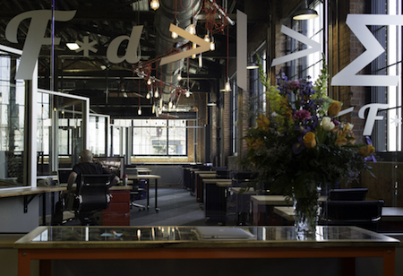

Sitting on the corner of Sixth and Main, it’s an inauspicious building, an unassuming industrial space, a relic from a bygone era. Open the doors, though, and one is transported from the edge of a Midwestern downtown into a state-of-the-art workspace where minds are engaged and traversing the forefront of innovation.
This is MatchBOX Coworking Studio, where entrepreneurs and artists can meet, mingle and create — all while contributing to making Lafayette a welcoming city for young innovators.
MatchBOX is the brainchild, so to speak, of Jason Tennenhouse and Mikel Berger, the two young developers who were charged by Lafayette Mayor Tony Roswarski with making it happen. These two Purdue University graduates saw the need for a space such as Matchbox, a place where youthful creators could come together and bring their ideas to fruition.
Tennenhouse graduated from Purdue with degrees in psychology and industrial design — “I use the psychology more than the industrial design,” he quips — and lived and worked in West Lafayette for a time after graduation, marrying, starting a family, and renovating an old house in the New Chauncey neighborhood in West Lafayette. His career path ultimately led to the development of his own toy company. But somewhere along the line, he realized that merely creating consumer goods felt empty and hollow — “At the end of the day, it’s just a hunk of plastic” — so he turned his energy instead toward not-for-profit work.
“I went all the way to the other end of the spectrum,” Tennenhouse says. “But I missed the speed of the market-driven stuff I did at the beginning of my career.”
Tennenhouse took on various other ventures, including Greyhouse Coffee & Supply Co., which was in some ways an early precursor to the co-working studio concept. He was involved with the Quality of Life Committee with the City of Lafayette, where people were throwing around ideas and brainstorming about how to retain young people, with their talent and creativity. As someone who cared about giving back to the community, Tennenhouse was immediately on board with this dialogue.
He was looking toward the future and wanted Lafayette to be a place where people like him could be inspired, be optimistic — a place where the younger generation would feel welcome and encouraged. He saw too many people like him leaving for Indianapolis or the coasts. What, he wondered, could be done to counter their exodus?
Somewhere in these discussions, a thought germinated about creating a place where people could be encouraged to stay and create. Encouraged and wanting to move forward, the discussions continued with Dennis Carson, economic development director for the City of Lafayette, about creating a space where people could collaborate.
“How could we get this to happen?” he says.
Intrigued, Tennenhouse came on initially as an adviser.
“It isn’t just another business,” he says. “It’s about an ethos we’re creating.”
Tennenhouse says he actually was fairly negative early on, wanting to make sure the project was handled carefully, with thoughtfulness and a commitment to the people of Lafayette. And then before he knew it, he became the project leader. He brought on Mikel Berger, a fellow Purdue alum, to help guide the project.
Berger had a background not unlike Tennenhouse. He grew up in north central Indiana and came to Purdue in 1997, staying to complete his graduate studies. Tennenhouse identified him early on as someone who shared his own commitment to giving back to the city and caring about its people.
And Berger had similar experience in starting up his own business; he had ideas and determination, but no need for full-time office space.
“MatchBOX is the place I wish had existed when I was in grad school and starting DelMar Software Development,” Berger says.
Both men had used coffee shops and small restaurants for their start-up companies early on, when they lacked the resources to actually rent office space. But coffee shops are less than ideal for a variety of reasons: The Wi-Fi is slow, Berger says, and it can be difficult to snag that one seat next to the outlet one needs to plug in a laptop.
“It’s not very professional, sitting next to a baby coughing,” Berger says. “But I didn’t need a full-time office. I didn’t want to sign a lease. I don’t know if I’ll be around in six months. I saw a gap for folks like myself.”
A co-working studio would help fill that niche, they knew. But they wanted to do their homework and be sure to create exactly the type of studio that would be successful in Lafayette, not merely copy one from Chicago or Los Angeles.
“How do we help the tech industry grow; how can we help smaller start-up industries grow?” Berger says he wondered at the time. “We could learn generic things, but what is Lafayette’s brand of co-working?
The team, led by Tennenhouse and Berger, and armed with a healthy dose of skepticism, forged ahead, tentative about the feasibility. They found a location (a former auto dealership on the corner of Sixth and South streets, next to the Tippecanoe County Public Library) and came up with a name and logo.
ContinueThe building had been donated to benefit the community, so the group was able to work with the library to make the space work. Berger likes the repurposing of a former auto dealership as a place to house a bustling group of young entrepreneurs.

“Cars were new technology when that building was built,” he says. “They were the high-tech industry of the day. We’re trying to connect to the past.”
Tennenhouse admits they were tentative about the project’s viability. There were several factors that needed to come together in order for it to open. But, he thought, if it didn’t work, at least the historic building would have been renovated.
But local businesses were anxious to partner with the city in making this venture a reality. Early on, Tennenhouse says they were able to secure 25 people and businesses as partners and supporters. Even early on, people were very enthusiastic. And they were able to capitalize on relationships, offering memberships in trade for service, such as web development and social media expertise.
“It took a lot of folks — in a good way — to get MatchBOX started,” Berger says.
In April 2014, MatchBOX Coworking Studio opened its doors. Tennenhouse and Berger saw their vision come to life. The look is industrial and spare, hightech yet welcoming. There are spaces for working that have the coffeehouse feel, with open desks and a stage; there are more quiet areas, with reserved desks. There are private meeting and conference rooms, and there’s a workroom with a bench area, a drill press and a 3D printer. And plenty of amenities are provided — the obvious, such as Wi-Fi and printing, but also 24-hour access, lockers, tools and snacks. And, of course, plenty of coffee.

“We didn’t know if it would work,” Tennehouse says. “It’s worked better than we thought.”
“People come for the space,” says Berger. “They end up staying for the community. Whether they’re a freelancer or working for a different business, the struggles are very similar. It doesn’t matter that your paychecks don’t have the same name.”
Thus far, Tennenhouse and Berger are content to call MatchBOX a success. The downtown location has been a perfect fit. With the population and business density, it has been a great addition to an already thriving downtown.
“Downtown, you can walk to a restaurant and grab lunch,” Berger says. “You don’t have to get in your car. You can move around the space, run to the bank.”
MatchBOX is a boon for the entire city. And Berger and Tennenhouse are quick to give credit to the many people who helped make it a reality, from those who helped get it up and running to those who take care of day-to-day operations.
“I think the piece of the story that is often overlooked is this whole team of people,” Tennenhouse says. “The mayor has been such a big supporter. It’s really about all these other people.”
Berger agrees; it took a whole group to make MatchBOX happen. “We’re just really thankful for the support of the mayor and the community, the people who took a chance on becoming a member early on, people who didn’t quite know what this co-working thing was about,” says Berger.
Ultimately, it’s all about community. Berger says they are anxious to see the MatchBOX community grow, whether it’s within the building’s walls or beyond. Tennenhouse says they are still working on forming partnerships, from working with Purdue to state government to other co-working spaces or even larger national corporations.
“I’m excited about what some of those things might turn out to be, “ he says.
“We want folks to feel like they can get involved,” Berger says. Businesses are using the space for off-site retreats, and he is anxious for more groups to take advantage.
“There are more creative ways for people to use the space and become part of the bigger community,” Berger says. “When the web developer is sitting next to the writer, that’s when great things happen.”
by Cindy Gerlach